정보통신기사(구) (2018-06-16 기출문제)
1과목: 디지털 전자회로
1. 다음 그림과 같은 평활회로에서 출력 맥동률을 최소화하기 위한 방법으로 틀린 것은?
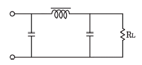
- 정류파형의 주파수를 높인다.
- L값을 크게 한다.
- C값을 크게 한다.
- RL값을 작게 한다.
(정답률: 72%)

2. 다음 그림과 같은 회로의 입력에 120[Vrms], 60[Hz] 정현파 신호가 인가되었을 경우, 부하에 걸리는 직류전압은 약 얼마인가? (단, 다이오드에 걸리는 전압강하는 무시한다.)
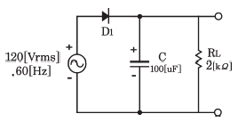
- 169.9[V]
- 167.9[V]
- 164.9[V]
- 162.9[V]
(정답률: 44%)
3. 연산증폭기를 이용한 능동 여파기에서 차단주파수는 출력전압이 최대값의 약 몇 [%]로 감소하는 주파수인가?
- 10[%]
- 50[%]
- 70[%]
- 90[%]
(정답률: 62%)
4. 다음 중 OP-AMP 성능을 판단하는 파라미터로 관련 없는 것은?
- Vin(입력 오프셋 전압)
- CMRR(동상 신호 제거비)
- IB(입력 바이어스전류)
- PIV(최대 역 전압)
(정답률: 71%)
5. 다음 회로에서 Vgs가 –1.4[V], VDS가 4.5[V], IDS가 10[mA]일 때 RD와 RS의 값은?
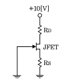
- RD=410[Ω], RS=240[Ω]
- RD=410[Ω], RS=140[Ω]
- RD=310[Ω], RS=140[Ω]
- RD=310[Ω], RS=240[Ω]
(정답률: 62%)
6. 다음과 같은 부궤환 증폭기 회로의 폐루프(Closed-Loop) 이득은? (단, 증폭기의 증폭도는 무한대(∞) 이다.)
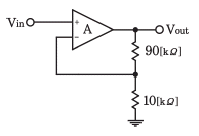
- 10
- 5
- 3
- 1
(정답률: 68%)
7. 다음 회로는 빈-브릿지(Wien-Bridge) 발진회로이다. R1, R2값이 감소할 경우 발진주파수의 변화는?
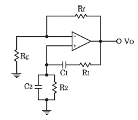
- 증가한다.
- 감소한다.
- 변화없다.
- 발진이 되지 않는다.
(정답률: 75%)
8. 다음 중 LC발진회로에서 발진주파수의 변동요인과 대책이 틀린 것은?
- 전원전압의 변동 : 직류안정화 바이어스 회로를 사용
- 부하의 변동 : Q가 낮은 수정편을 사용
- 온도의 변화 : 항온조를 사용
- 습도에 의한 영향 : 회로의 방습 조치
(정답률: 73%)
9. 9,600[bps]의 비트열을 16진 PSK로 변조하여 전송하면 변조속도는?
- 1,200[Baud]
- 2,400[Baud]
- 3,200[Baud]
- 4,600[Baud]
(정답률: 79%)
10. 다음 중 단측파대 변조 방식의 특징으로 틀린 것은?
- 점유주파수 대역폭이 매우 작다.
- 변복조기 사이에 반송파의 동기가 필요하다.
- 송신출력이 비교적 작게 된다.
- 전송 도중에 복조되는 경우가 있다.
(정답률: 70%)
11. 다음 중 AM방식의 변조도에 대한 설명으로 틀린 것은?
- 변조도가 1일 때 완전변조라 한다.
- 변조도가 1보다 작으면 파형의 일부가 잘려 일그러짐이 생긴다.
- 변조도는 신호파의 진폭과 반송파의 진폭이 바로 나타낸다.
- 변조도가 1보다 큰 경우를 과변조라 한다.
(정답률: 72%)
12. 다음 중 정보 전송 기술에서 디지털 신호 재생 중계기의 기능에 해당되지 않는 것은?
- 타이밍
- 에러 정정
- 파형 등화
- 식별 재생
(정답률: 67%)
13. 다음 중 슈미트 트리거 회로에 대한 설명으로 틀린 것은?
- 입력이 어느 레벨이 되면 비약하여 방형 파형을 발생시킨다.
- 입력 전압의 크기가 on,off 상태를 결정한다.
- 펄스 파형을 만드는 회로로 사용한다.
- 증폭기에 궤환을 걸어 입력신호의 진폭에 따른 1개의 안정 상태를 갖는 회로이다.
(정답률: 71%)
14. 다음 중 저역 통과 RC회로에서 시정수가 의미하는 것은?
- 응답의 위치를 결정해준다.
- 입력의 주기를 결정해준다.
- 입력의 진폭 크기를 표시한다.
- 응답의 상승속도를 표시한다.
(정답률: 64%)
15. J-K 플립플롭에서 Jn=0, Kn=1 일 때 클럭 펄스가 1이면 Qn+1의 출력 상태는?
- 반전
- 1
- 0
- 부정
(정답률: 65%)
16. 다음 그림과 같은 논리회로 출력값과 기능으로 옳은 것은?
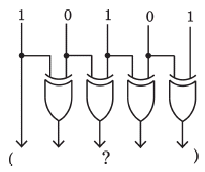
- 11011, 패리티 점검
- 11000, 양수, 음수 점검
- 11111, 코드 변환
- 10000, 패리티 변환
(정답률: 74%)
17. 다음 그림에서 입력 신호 X와 Y가 어떤 조건을 갖출 때 출력 신호의 값이 1이 되는가?
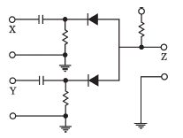
- X=0, Y=0
- X=1, Y=0
- X=0, Y=1
- X=1, Y=1
(정답률: 66%)
18. 다음은 어떤 논리 회로인가?
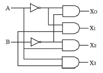
- 인코더
- 디코더
- RS플립플롭
- JK플립플롭
(정답률: 70%)
19. 다음 중 시프트 레지스터 출력을 입력에 되먹임 시킴으로써 클럭 펄스가 가해지면, 같은 2진수가 레지스터 내부에서 순환하도록 만든 카운터는?
- 링 카운터
- 2진 리플 카운터
- 필드코드 카운터
- BCD 카운터
(정답률: 69%)
20. 다음 중 동기식 카운터에 대한 설명으로 옳은 것은?
- 플립플롭의 단수는 동작 속도와 무관하다.
- 논리식이 단순하고 설계가 쉽다.
- 전단의 출력이 다음 단의 트리거 입력이 된다.
- 동영상 회로에 많이 사용된다.
(정답률: 61%)
2과목: 정보통신 시스템
21. 다중 접근 제어 방식 중 경쟁 방식(Contention)과 거리가 먼 것은?
- ALOHA
- CSMA/CD
- CSMA/CA
- Poling
(정답률: 73%)
22. 다음 중 정보통신망의 물리적 구성요소가 아닌 것은?
- 교환기
- 전송로
- 단말기
- 서비스
(정답률: 84%)
23. 10개의 지국을 그물형(Mesh)으로 연결하려 할 때 소요되는 최소 링크 수는?
- 25
- 35
- 45
- 55
(정답률: 85%)
24. 다음 중 데이터 전송방식에서 직렬 전송 방식에 대한 설명이 아닌 것은?
- 현재 대부분의 데이터 전송 시스템에 활용되고 있다.
- 단말 장치에서의 입출력 부호 형식으로 사용된다.
- 부호를 구성하는 모든 비트를 하나의 전송로를 통해 차례로 전송하는 방식이다.
- 송수신간에 동기가 필요하다.
(정답률: 53%)
25. 다음 중 TCP 프레임의 헤더 구조에 대한 설명으로 틀린 것은?(오류 신고가 접수된 문제입니다. 반드시 정답과 해설을 확인하시기 바랍니다.)
- 순차 번호(Sequence Number) 필드는 송신 TCP로부터 수신 TCP로 송신되는 데이터 스트림 중 마지막 바이트를 지정한다.
- 응답 번호(Acknowledgement Number)는 응답제어 비트가 설정되어 있을 때만 제공된다.
- 헤더 길이(HLEN)는 TCP Segment에 있는 헤더의 길이를 4비트 워드 단위로 나타낸다.
- Window Size는 수신부가 응답필드에서 지정한 번호부터 수신 할 수 있는 바이트의 수를 표시한다.
(정답률: 61%)
26. 프로토콜의 구성요소 중 '속도 맞춤이나 정보의 순서' 등의 전달되는 정보 간 시간의 약속을 규정하는 것은?
- 의미(Semantics)
- 구문(Syntax)
- 타이밍(Timing)
- 포맷(Format)
(정답률: 83%)
27. 다음 중 OSI 7계층과 TCP/IP 프로토콜의 관계에 대한 설명으로 옳지 않은 것은?
- TCP/IP 프로토콜은 OSI 참조모델보다 먼저 개발되었다.
- TCP/IP 프로토콜의 계층구조는 OSI 모델의 계층 구조와 정확하게 일치하지 않는다.
- OSI 모델은 7개 계층으로 TCP/IP 프로토콜은 4개 계층으로 구성되어 있다.
- OSI 모델의 상위 4개 계층은 TCP/IP 프로토콜에서 응용계층으로 표현된다.
(정답률: 79%)
28. OSI 참조 모델의 구성요소 중 서비스와 데이터 단위에 대한 설명이다. 괄호 안에 알맞은 말은?
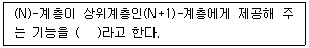
- (N) - 서비스
- (N) - SAP
- (N) - SDU
- (N+1) - SAP
(정답률: 71%)
29. 다음 중 HDLC 프로토콜에 대한 설명으로 옳지 않은 것은?
- 바이트 방식의 프로토콜이다.
- 단방향, 반이중, 전이중 방식 모두 사용이 가능하다.
- 데이터 링크 계층의 프로토콜이다.
- 오류제어방식으로 ARQ 방식을 사용한다.
(정답률: 65%)
30. 다음 중 전송속도가 가장 빠른 디지털가입자회선(Digital Subscriber Line) 방식은?
- ADSL
- SDSL
- VDSL
- HDSL
(정답률: 74%)
31. VoIP 기술의 특징을 설명한 것으로 옳지 않은 것은?
- PSTN에 비해 요금이 저렴하다.
- 이미 구축된 인터넷 장비를 활용함으로써 구축 비용이 상대적으로 적게 들어간다.
- 인터넷과 연계된 다양한 부가 서비스 기능이 가능하다.
- 기능 및 동작이 PSTN에 비해 단순하고, 보안에 강한다.
(정답률: 78%)
32. 이동국이 다른 셀 또는 다른 섹터로 이동하는 경우, 사용중인 무선 주파수(RF) 채널 대신에 새로운 채널을 할당하여 통화가 계속 유지될 수 있게 해주는 기능을 무엇이라 하는가?
- 핸드오버
- 로밍
- 인증
- 페이징
(정답률: 72%)
33. 근거리통신망(LAN)에서 사용되는 이더넷 프레임(Ethernet Frame)의 목적지 주소크기와 출발지 주소크기의 합은 얼마인가?
- 6[bits]
- 12[bits]
- 64[bits]
- 96[bits]
(정답률: 59%)
34. IEEE 802 표준의 권고안이 잘못 연결 된 것은?
- IEEE 802.1 : 상위계층 인터페이스
- IEEE 802.2 : 논리 연결 제어
- IEEE 802.3 : 이더넷
- IEEE 802.4 : 토큰링
(정답률: 66%)
35. 다음 중 디지털 통신에서 펄스 성형(pulse shaping)을 하는 주된 이유로 가장 적합한 것은?
- 심볼간 간섭(IS)를 줄이기 위함
- 노이즈를 줄이기 위함
- 다중접속을 용이하게 하기 위함
- 채널 대역폭을 증가시키기 위함
(정답률: 70%)
36. 정보통신 시스템을 실제로 만들어내는 과정은?
- 시스템 설계과정
- 시스템 계획과정
- 시스템 구현과정
- 시스템 운용지원과정
(정답률: 82%)
37. 다음은 암호화에 사용되는 기술의 특징을 설명한 것이다. 무엇에 대한 설명인가?
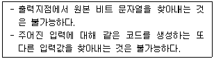
- 해쉬 함수
- IPSec
- 공개키 암호화
- 대칭키 암호화
(정답률: 80%)
38. 평균고장발생 간격이 23시간이고, 평균복구시간이 1시간인 정보통신시스템의 1일 가동률은 약 몇[%]인가?
- 104.34[%]
- 100.00[%]
- 95.83[%]
- 91.67[%]
(정답률: 82%)
39. 다음 중 네트워크의 보안기술로 옳은 것은?
- VPN
- 스니핑
- 스푸핑
- DoS(Denial of Service)
(정답률: 82%)
40. 암호화 형식에서 4명이 통신을 할 때, 서로 간 비밀통신과 공개통신을 하기 위한 키의 수는?
- 비밀키 : 2개, 공개키 : 4개
- 비밀키 : 4개, 공개키 : 6개
- 비밀키 : 6개, 공개키 : 8개
- 비밀키 : 8개, 공개키 : 10개
(정답률: 79%)
3과목: 정보통신 기기
41. 다음 중 웨어러블 디바이스가 갖춰야 할 기본 기능으로 틀린 것은?
- 항시성
- 가시성
- 저전력
- 경량화
(정답률: 73%)
42. 다음 중 데이터 전송계에서 신호변환 외에 전송신호의 동기제어 송수신 확인, 전송 조작절차의 제어 등을 담당하는 역할을 하는 장치는?
- DCE
- DTE
- DDU
- DID
(정답률: 75%)
43. 다음 내용에 해당하는 것은?
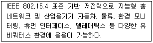
- Bluetooth
- Zigbee
- NFC
- RFID
(정답률: 74%)
44. 다음 중 라우터의 이더넷(Ehternet) 인터페이스인 접속 포트에 활용되지 않는 것은?
- TP
- AUI
- DVI
- MAU
(정답률: 74%)
45. 다음 중 리피터와 브리지에 대한 설명으로 맞지 않은 것은?
- 리피터는 하나의 LAN의 세그먼트를 연결한다.
- 리피터는 모든 프레임을 내보내며 필터링 능력을 갖고 있지 않다.
- 브리지는 필터링 결정에 사용되는 테이블을 가지고 있다.
- 브리지는 프레임의 물리적 주소(MAC address)를 변경한다.
(정답률: 71%)
46. 1,200[bps] 속도를 갖는 4채널을 다중화한다면 다중화 설비 출력 속도는 적어도 얼마 이상이어야 하는가?
- 1,200[bps]
- 2,400[bps]
- 4,800[bps]
- 9,600[bps]
(정답률: 80%)
47. 다음 보안 관리시스템에 해당하는 것은?
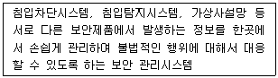
- ESM(Enterprise Security Management)
- TMS(Threat Management System)
- UTM(Unified Threat Management)
- PGP(Pretty Good Privacy)
(정답률: 78%)
48. 다음 중 단일 링크를 통하여 여러 개의 신호를 동시에 전송하는 것은 무엇인가?
- 변조
- 부호화
- 복호화
- 다중화
(정답률: 83%)
49. 무선접속 장치가 설치된 곳을 중심으로 일정 거리 이내에서 PDA나 노트북, 스마트폰을 이용하여 초고속 인터넷을 이용할 수 있는 서비스를 무엇이라 하는가?
- RFID
- Bluetooth
- SWAP
- WiFi
(정답률: 79%)
50. 국내 HDTV방식의 1채널 대역폭은 얼마인가?
- 4[MHz]
- 6[MHz]
- 8[MHz]
- 10[MHz]
(정답률: 78%)
51. 다음 중 영상통신기기의 “보안”사항으로 관련이 없는 것은?
- 무결성(Integrity)
- 인증(Authentication)
- 암호화(Encryption)
- 품질(Quality)
(정답률: 82%)
52. 디지털 화상회의 시스템에서 QCIF 포맷을 흑백화면으로 25프레임, 8비트로 샘플링을 한다면 데이터 전송률은 약 얼마인가?
- 5[Mbps]
- 10[Mbps]
- 20[Mbps]
- 40[Mbps]
(정답률: 54%)
53. 다음 중 IPTV 서비스를 위한 네트워크 엔지니어링과 품질 최적화를 위한 기능으로 맞지 않는 것은?
- 트래픽 관리
- 망용량 관리
- 네트워크 플래닝
- 영상자원 관리
(정답률: 70%)
54. 다음 중 인공위성 궤도의 종류에 해당하지 않는 것은?
- 저궤도(Low Earth Orbit)
- 중궤도(Medium Earth Orbit)
- 임의궤도(Random Earth Orbit)
- 정지궤도(Geostationary Orbit)
(정답률: 74%)
55. 다음은 이동통신 기술 중 무엇에 관한 설명인가?
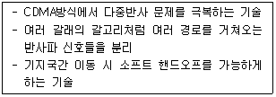
- Rake 수신기 기법
- CDMA 채널 설정 방법
- HSDPA 초기 동기 구분 기술
- MIMO 기술
(정답률: 77%)
56. 저궤도 위성통신 시스템의 일반적인 특징이 아닌 것은?
- 정지위성에 비해 많은 수의 위성이 필요하다.
- 동일한 궤도에서도 여러 개의 위성이 필요하다.
- 정지위성에 비해 저궤도 위성의 수명이 매우 길다.
- 다중 빔 방식으로 주파수를 효율적으로 사용한다.
(정답률: 75%)
57. 인터넷 텔레포니의 핵심 기술로서 지금까지 PSTN을 통해 이루어졌던 음성 전송을 인터넷 망을 사용하여 제공하는 것은?
- VoIP
- DMB
- WiBro
- VOD
(정답률: 83%)
58. 다음 중 국내 디지털 TV방송의 영상압축 기술은?
- MPEG-1
- MPEG-2
- MPEG-4
- MPEG-7
(정답률: 60%)
59. OTT(Over The Top)는 전파나 케이블이 아닌 인터넷망을 통해 멀티미디어 콘텐츠를 볼 수 있는 서비스를 말한다. Over The Top에서 “Top"이 의미하는 기기는 무엇인가?
- 모뎀
- 셋탑박스
- 공유기
- TV
(정답률: 82%)
60. 멀티미디어 서비스 활성화를 위한 CPND의 의미로 틀린 것은?
- C : Contents(콘텐츠)
- P : Platform(플랫폼)
- N : Network(네트워크)
- D : Digital(디지털)
(정답률: 82%)
4과목: 정보전송 공학
61. 블루투스에 사용되는 TDD(Time Division Duplex)-TDMA방식에 대한 설명으로 틀린 것은?
- 송신자와 수신자가 데이터를 송신하고 수신할 수 있지만, 동시에 이루어지지 않는다.
- 송신자와 수신자의 각 방향에 대한 통신은 서로 다른 주파수 도약을 사용한다.
- 전이중 양방향 통신방식의 한 종류이다.
- 서로 다른 반송 주파수를 사용하는 워키토키와 유사하다.
(정답률: 51%)
62. 다음 중 스펙트럼확산기술에 의해 변조된 신호를 공간적으로 다원접속하는 방식은?
- CDMA
- CSMA
- TDMA
- FDMA
(정답률: 64%)
63. 여러 발광소자에서 나오는 파장이 다른 광신호를 광결합기로 결합하여 전송하는 다중화 방식은?
- WDM
- CDM
- FDM
- TDM
(정답률: 80%)
64. 다음 중 다중화에 대한 설명으로 알맞은 것은?
- 다수의 신호에 대응하는 다수의 채널로 전송하는 방식이다.
- 하나의 신호를 다수의 채널로 전송하는 방식이다.
- 하나의 신호를 하나의 채널로 전송하는 방식이다.
- 다수의 신호를 동시에 하나의 채널로 전송하는 방식이다.
(정답률: 73%)
65. 다음 중 꼬임선에 비해 동축케이블이 갖는 장점으로 틀린 것은?
- 용량이 커서 넓은 대역폭의 신호를 전송할 수 있다.
- 케이블간의 혼선은 무시할 수 있을 정도로 작다.
- 주파수에 따른 신호의 감쇠나 전송지연의 변화가 적다.
- 전파속도가 빠르기 때문에 에코 억제기가 필요하다.
(정답률: 69%)
66. 광 섬유는 Core광섬유의 굴절율 분포에 따라 구분하면 계단형(Step index)과 2차 곡선 모양(Graded index)이 있고, 전파모드 수가 1개이면 Single mode이고, 다수이면 Multi mode라고 한다. 이 2개 특성을 조합하여 광섬유 종류를 나타내는데, 아래 내용 중 상용화되지 않은 광섬유 종류는 어느 것인가?
- Step Index Multi Mode
- Step Index Single Mode
- Graded Index Multi Mode
- Graded Index Single Mode
(정답률: 65%)
67. 다음 중 전자파(전파)에 대한 설명으로 틀린 것은?
- 전자파를 파장이 짧은 것부터 순서대로 나열하면 감마선, x선, 적외선 등이 있다.
- 전자파는 파장이 짧을수록 직진성 및 지향성이 강하다.
- 전자파는 진공 또는 물질 속을 전자장의 진동이 전파함으로써 전자 에너지를 운반하는 것이다.
- 전파는 인공적인 유도에 의해 공간에 퍼져나가는 파이다.
(정답률: 74%)
68. UTP 케이블의 카테고리(Category)라 함은 표준화 기구에서 정의한 케이블 회선의 꼬임 정도 등을 나타내는 인터페이스 규격이다. 다음 중 대부분 Unshielded 형태로 제작되며, 최대 100[MHz]의 전송대역까지 통신 가능한 미국표준(EIA-568)규격은?
- Category5 또는 5e
- Category6
- Category6A
- Category7
(정답률: 80%)
69. 다음 중 동축케이블의 용도가 아닌 것은?
- 광대역 전송로로 사용
- TV 신호 분배(유선 TV의 경우)에 사용
- LAN 구성에 사용
- 장거리 시스템 링크용으로 사용
(정답률: 71%)
70. 다음 중 동기식 전송의 특징으로 적합하지 않은 것은?
- 각문자의 앞에는 시작비트, 뒤에는 종료비트를 갖는다.
- 블록과 블록 사이에는 휴지간격이 없다.
- 정보전송 형태는 블록단위로 이루어진다.
- 수신측 단말에는 버퍼 기억장치를 가지고 있어야 한다.
(정답률: 67%)
71. 다음 중 4선식 회선에 가장 효율적인 통신 방식은?
- 단방향 통신
- 반이중 통신
- 전이중 통신
- 기저대역 통신
(정답률: 79%)
72. 'TEST'라는 문자를 아스키(ASCII) 코드 형태로 변환하여 비동기 방식으로 전송할 때 스타트 비트, 스톱 비트를 각각 1비트로 할 경우 전송되는 총 비트수는?
- 6[bit]
- 28[bit]
- 32[bit]
- 40[bit]
(정답률: 70%)
73. 문자동기방식에서 에러를 체크하기 위한 코드는?
- ETX(End of Text)
- STX(Start of Text)
- BCC(Block Check Character)
- BSC(Binary Synchronous)
(정답률: 80%)
74. 다음 중 TCP에 대한 설명으로 틀린 것은?
- TCP는 트랜스포트 계층의 프로토콜이다.
- TCP에서는 혼잡을 회피하기 위한 방법으로 Slow-Start 알고리즘을 사용한다.
- TCP는 UDP와 같이 데이터의 전송 전에 연결을 설정하지 않고 상태 정보를 유지한다.
- 각 TCP접속의 종단에 일정 크기의 버퍼를 가지고 있어서 흐름제어와 혼잡제어를 수행한다.
(정답률: 75%)
75. 라우팅의 루핑 문제를 방지하기 위한 여러 가지 방법 중 라우팅 정보가 들어온 곳으로는 같은 라우팅 정보를 내보내지 않는 방법은?
- 최대 홉 카운트(Maximum Hop Count)
- 스플릿 호라이즌(Split Horizon)
- 홀드 다운 타이머(Hold Down Timer)
- 라우트 포이즈닝(Route Poisoning)
(정답률: 72%)
76. 다음 중 IP 헤더의 구조에 속하지 않는 것은?
- 버전(Version)
- 헤더길이(Header Length)
- IP 주소
- 긴급 포인터(Urgent Pointer)
(정답률: 76%)
77. 클래스 B주소를 가지고 서브넷 마스크 255.255.255.240으로 서브넷을 만들었을 때 나오는 서브넷의 수와 호스트의 수가 맞게 짝지어진 것은?
- 서브넷 2,048, 호스트 14
- 서브넷 14, 호스트 2,048
- 서브넷 4,094, 호스트 14
- 서브넷 14, 호스트 4,094
(정답률: 73%)
78. 다음 중 에러 검출 방식으로 옳지 않은 것은?
- 패리티 체크 방식
- 군계수 체크 방식
- 정 마크 방식
- ARQ 방식
(정답률: 65%)
79. 다음 중 인터넷 TV(IPTV)를 상용화함에 따라 인터넷망상에서 고려해야 하는 기능과 가장 관련이 없는 것은?
- IP Multicasting
- Streaming
- 초고속 인터넷회선의 소요 대역폭
- IP Broadcasting
(정답률: 64%)
80. 네트워크 노드 사이에서의 신뢰성 있고 효율적인 정보의 전달에 목적을 둔 프로토콜은?
- 네트워크 액세스 프로토콜
- 네트워크 내부 프로토콜
- 응용 지향 프로토콜
- 네트워크간 프로토콜
(정답률: 66%)
5과목: 전자계산기일반 및 정보통신설비기준
81. 일정시간 모여진 변동 자료를 어느 시기에 일괄적으로 처리하는 방법은?
- 리얼 타임 프로세싱(Real Time Processing) 방식
- 배치 프로세싱(Batch Processing) 방식
- 타임 셰어링 시스템(Time Sharing System) 방식
- 멀티 프로그래밍(Multi Programming) 방식
(정답률: 76%)
82. 다음은 명령어의 형식에 대한 설명이다. 괄호 안에 들어갈 용어로 옳은 것은?
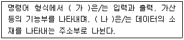
- 가 : Operation Code1, 나 : Operation Code2
- 가 : Operand, 나 : Operation Code1
- 가 : Operation Code, 나 : Operand
- 가 : Operand, 나 : Instruction Code
(정답률: 67%)
83. 다음 중 교착상태 예방 방법의 4가지 필터조건에 해당하지 않는 것은?
- 상호배제
- 점유와 대기
- 자원할당
- 비선점
(정답률: 55%)
84. 다음은 인터럽트 서비스 루틴에 해당하는 연산을 나타낸 것이다. 괄호 안에 들어갈 연산과정은?
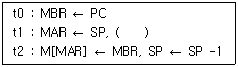
- AC ← ISR의 시작주소
- SP ← ISR의 시작주소
- PC ← ISR의 시작주소
- MBR ← ISR의 시작주소
(정답률: 68%)
85. SJF(Shortest-Job-First) 정책으로 관리하는 시스템에 프로세스 p1, p2, p3, p4, p5가 동시에 도착했다. 다음 표와 같이 프로세스가 정의되었을 때 p3의 반환시간(Turn-Around Time)은 얼마인가?
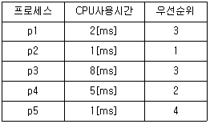
- 11[ms]
- 14[ms]
- 16[ms]
- 17[ms]
(정답률: 66%)
86. 다음 중 부동 소수점 표현의 수들 사이에서 곱셈 알고리즘 과정에 해당하지 않는 것은?
- 0(Zero)인지의 여부를 조사한다.
- 가수의 위치를 조정한다.
- 가수를 곱한다.
- 결과를 정규화 한다.
(정답률: 63%)
87. 다음 중 비동기 인터페이스(Asynchronous Interface)에 대한 설명으로 틀린 것은?
- 컴퓨터와 입출력 장치가 데이터를 주고 받을 때 일정한 클록 신호의 속도에 맞추어 약정된 신호에 의해 동기를 맞추는 방식이다.
- 동기를 맞추는 약정된 신호는 시작(Start), 종료(Stop) 비트 신호이다.
- 컴퓨터 내에 있는 입출력 시스템의 전송 속도와 입출력 장치의 속도가 현저하게 다를 때 사용한다.
- 일반적으로 컴퓨터 본체와 주변 장치 간에 직렬 데이터 전송을 하기 위해 사용된다.
(정답률: 62%)
88. 인터럽트의 처리과정에서 인터럽트 처리 프로그램(Interrupt Handling Program)으로 이전하기 전에 시스템 제어 스택(System Control Stack)에 저장해야 할 정보는 무엇인가?
- 현재의 프로그램 계수기(Program Counter)의 값
- 이전에 수행하던 프로그램의 명칭
- 인터럽트를 발생시킨 장치의 명칭
- 인터럽트 처리 프로그램의 시작 주소
(정답률: 65%)
89. 다음 명령의 수행 결과값은?
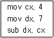
- 1.75
- 3
- 11
- 28
(정답률: 79%)
90. 다음 중 컴퓨터에서 수를 표현하는 방식이 아닌 것은?
- 양자화 표현
- 1의 보수 표현
- 2의 보수 표현
- 부호화 절대치 표현
(정답률: 77%)
91. 다음 중 방송통신의 원활한 발전을 위하여 새로운 방송통신 방식을 채택할 수 있는 기관은?
- 한국정보통신기술협회
- 국립전파연구원
- 과학기술정보통신부
- 한국정보화진흥원
(정답률: 72%)
92. 다음 중 전송설비 및 선로설비의 보호대책과 관계가 없는 것은?
- 전송설비와 선로설비간의 분계점을 명확히 한다.
- 다른 사람이 설치한 설비에 피해를 받지 않도록 한다.
- 설비 주위에 설비에 관한 안전표지를 한다.
- 강전류전선에 대한 보호망이나 보호선을 설치한다.
(정답률: 68%)
93. 다음 중 전기통신기본법의 목적이 아닌 것은?
- 전기통신을 효율적으로 관리
- 전기통신의 발전을 촉진
- 공공복리의 증진에 이바지
- 전기통신기술의 표준 개정
(정답률: 61%)
94. 정보통신공사에서 공사와 감리를 함께 할 수 없도록 되어 있는 경우가 아닌 것은?
- 공사업자와 감리용역업자가 동일인인 경우
- 공사업자와 감리용역업자가 모회사와 자회사의 관계에 있는 경우
- 공사업자와 감리용역업자가 서로 해당 법인의 임직원의 관계인 경우
- 공사업자와 감리용역업자가 모두 한국정보통신공사협회에 가입되어 있는 경우
(정답률: 75%)
95. 다음 중 정보통신기술자의 배치에 대한 설명으로 옳지 않은 것은?
- 공사업자는 공사의 시공관리와 그 밖의 기술상의 관리를 하기 위해 공사현장에 정보통신기술자를 1명 이상 배치해야 한다.
- 공사현장에 배치된 정보통신기술자는 공사 발주자의 승낙을 받지 아니하고는 정당한 사유 없이 그 공사현장을 이탈할 수 없다.
- 공사업자는 공사가 중단된 기간이라도 정보통신기술자를 공사현장에 상주하게 하여 공사관리를 해야 한다.
- 공사 발주자는 배치된 정보통신기술자가 업무수행능력이 현저히 부족하다고 인정되는 경우에는 교체를 요청할 수 있다.
(정답률: 76%)
96. 과학기술정보통신부장관이 전기통신의 원활한 발전과 정보사회의 촉진을 위하여 수립해야 하는 전기통신기본계획에 포함되지 않는 것은?
- 전기통신의 이용효율화에 관한 사항
- 전기통신역무에 관한 사항
- 전기통신의 질서유지에 관한 사항
- 전기통신설비에 관한 사항
(정답률: 51%)
97. 다음 중 공사 도급의 정의를 가장 바르게 설명한 것은?
- 발주자가 의뢰한 공사의 설계도서를 작성하고 이에 따라 공사의 공정을 기획 작성
- 공사업자가 공사를 완공할 것을 약정하고, 발주자가 그 일의 결과에 대하여 대가를 지급할 것을 약정하는 계약
- 용역업자가 공사의 시방서를 작성하고 이에 따라 공사기자재를 준비
- 공사업자가 용역업자의 설계도서와 공사시방서에 따라 공사를 시공
(정답률: 76%)
98. 다음 중 정보통신공사업법에서 규정한 정보통신설비의 설치 및 유지·보수에 관한 공사와 이에 따른 부대공사가 아닌 것은?
- 수전설비를 포함한 정보통신전용 전기시설설비공사 등 그 밖의 설비공사
- 전기통신관계법령 및 전파관계법령에 의한 통신설비공사
- 정보통신관계법령에 의하여 정보통신설비를 이용하여 정보를 제어·저장 및 처리하는 정보설비공사
- 방송법 등 방송관계법령에 의한 방송설비공사
(정답률: 51%)
99. 전기통신사업자가 법원·검사·수사관서의 장·정보수사기관의 장으로부터 재판, 수사, 형의집행 또는 국가안전보장에 대한 위해를 방지하기 위한 정보수집을 위하여 자료의 열람이나 제출을 요청 받을 때에 응할 수 있는 대상이 아닌 것은?
- 이용자의 성명과 주민등록번호
- 이용자의 주소와 전화번호
- 이용자의 아이디
- 이용자의 동산 및 부동산
(정답률: 82%)
100. 다음 중 정보통신공사를 발주하는 자가 용역업자에게 설계를 발주하지 않고 시행할 수 있는 경우에 해당하지 않는 것은?
- 새로운 설계도면 작성이 필요 없는 기존 설비 대체공사
- 통신구설비공사
- 비상재해로 인한 긴급복구공사
- 50회선 이하의 구내통신선로설비공사
(정답률: 61%)